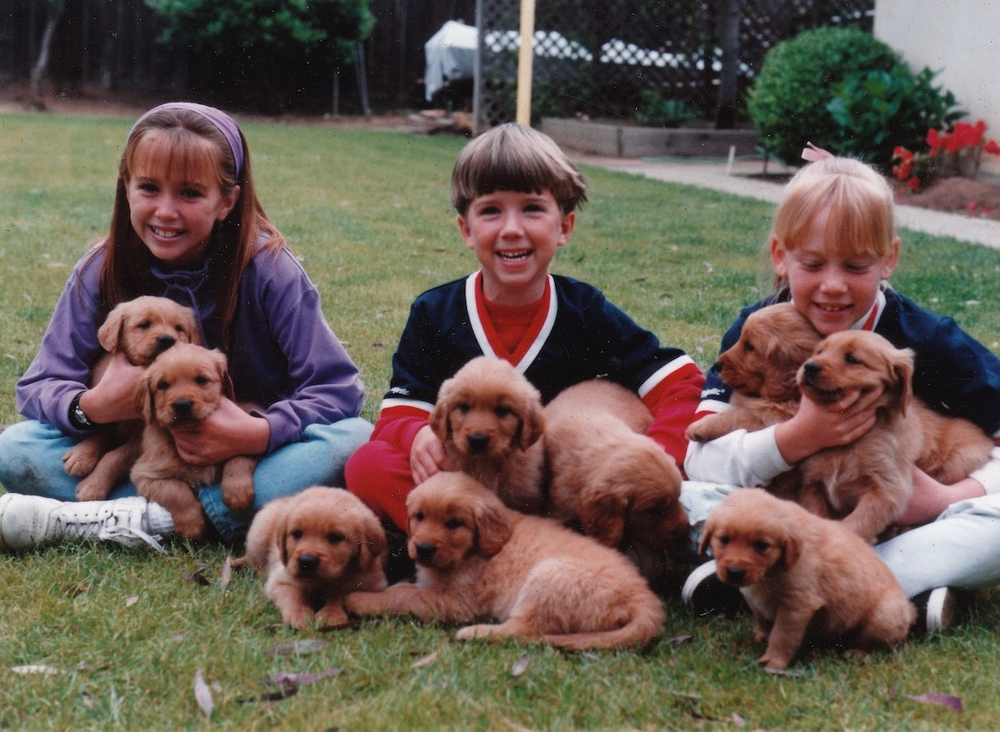

Dura Doggie
DOGpreneur
I'm a UC Santa Barbara grad and a self-motivated entrepreneur who turned a successful college project into a business called Dura Doggie (Durable Ideas). Our first product was a truck brake diaphragm with a logo on it that my mom created. My dad brought one home from work when I was a kid and my dog never chewed through it.
